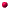

Past Projects
 QUANTICO - MSc project - State University of Campinas (UNICAMP) January 1990 to January 1991. QUANTICO is a simulator for circuits used for analog signal processing (using signal sampling). This program is similar to SCNs (Switched Capacitor Networks) simulators, but it allows the simulation of circuits where there is asynchronous switching. It's written in ANSI-C and C++ and runs under MS-DOS and Unix/XWindows. It's divided in three modules: Gera, to read the circuit's netlist; Simula to do the simulation, and Osc, to show the results in a user friendly oscilloscope like interface. This work was supported by a CAPES (Brazilian research agency) grant.
Switch level digital simulator - Federal University of Bahia - July 1987 to June 1988. This program simulates digital circuits at switch level. It allows the association of RC delays to the circuit's nodes and simulation of transistor's delays. This work was supported by a grant from the CNPq (Brazilian research agency).
EDCHIP - Federal University of Bahia , 1987 and later updated several times at UNICAMP. Computer aided design tool for integrated circuit layout design written in Pascal under MS-DOS. It allows the design of mask layouts using rectangles (Manhattan style) and can generate and read CIF (Caltech Intermediate Form). It has been used for the design of many analogue and digital chips at LED-UNICAMP.